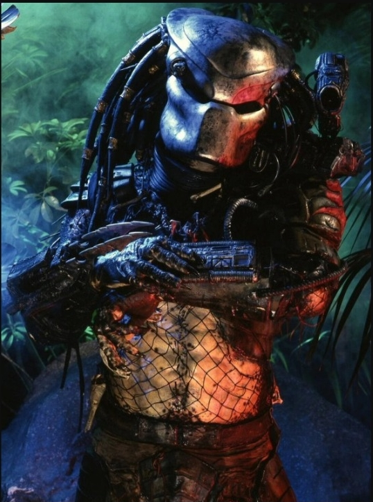

Theories and the Extended Universe
Predator: Full lore
We learn fundamental lore of the Predator in the second film Predator 2, by the second film we already gathered most info of the Predator species and the individuals we see in the film.
Predator Species: Culture
By the first film we see that the Predator although having superior weaponry compared with the team of Dutch (that by the way is the best Special Forces team of the world) as seen with the death of Blain, the team heavy weapons guy, killed with a giant hole in the chest and by Hawkins death, stealth killed by the invisible predator.
The killer actually prefers to pick off one by one and that this is a sport for him, as we the hunter refusing to attack by night and by recovering Blain corpse, Dutch reach this conclusion after losing two teammates, he also learnt what killed the Hopper's team, the first team send to the jungle, was also killed by the hunter.
(Of course we the audience already learn this by seeing the Hawkins body hanged from the tree directly above of his equipment, but he didn't see that.)
Dutch after caming to know that it bled in the Jungle shootout decides they must kill the Predator and that is more than possible. This was a wise choice, since in the beginning we see first team extraction chopper destroyed, escaping is not an option.
After multiple failed attempts of trapping and ambushing, Dutch learns that the female prisoner of the team was never targeted due to never
Dutch is the only left, he tries to escape the Predator by jumping into a river, he thinks that he lost the pursuer and rest in the mud, only to the Predator jump into the river too, here Dutch learns that hunter only sees in thermal vision, and the mud hides his heat.
Finally, with an upper hand Dutch prepare the terrain: setting traps, making a fire for a distraction , a bow and one explosive arrow, he challenges the Predator by a war cry who we see was with the skulls of all Dutch's teammates.
After losing the camouflage Dutch is left with no weapons, the predator strips down his own equipment and roars to Dutch, apparently he wants an even field against Dutch, he sees him as worthy prey to a duel.
What we learned
- The Predator has honor code, it only hunts dangerous prey, it doesn't attack prey that can't defend itself as seen with the woman prisoner with no weapons.
- It is intelligent as seen by avoiding all the traps set against him, minus the last trap that he didn't see.
- It only sees in infrared spectrum.
- It can imitate voices, both with its mask and by his voice.
- Is an giant, has super strength, is very agile, and determines the prey to hunt by seeing in action. As it stalks Dutch team when they wiped out a guerrilla post thinking they were the ones that killed Hopper's team.
The Predator for this film has given a name of Jungle Hunter
Predator 2
In Predator 2 we see another Predator in the Concrete Jungle of LA, with crime erupting and being very hot, the hunt season begins, killing criminals and police officers, this Predator also known as The Ghost or City Hunter, he has the highest kill count seen on screen in the franchise.
(More about him in Predator Individuals: City Hunter)
In this film we learn this on Predator Culture:
- The City Hunter is a Young Blood and was being supervised by elder predators, the Clan was observing him.
- Predator can not only see in thermal vision, but in various other visions such UV vision, this is how he avoided an ambush set by federals that was using suits to hide their heat.
- Predator have more weapons, combat stick, and a smart disk that returns to the owner, we learn that many or all the weapons are retractable, this shows a smart design allowed for portability.
- Most of the weapons are melee weapons, this shows the hunt culture, they don't call "hunting" shooting a prey with rifle, they go and kill them with their hands, this show how their culture value of strenght and don't like shortcuts in hunting.
- Explained in the comics, a predator of the tribe would retrieve City Hunter and stop him from continuing his killing spree in LA, their objective is not massacre.
- Of course, at the actions of City Hunter in the train station shows they are already checking if female prey are pregnant, if they are pregnant as was the case of the Police Officer Maria Cochita Alonso, they spare the prey, they don't see killing babies nor baby version of preys as valid hunting.
- At the death of City Hunter, Danny Glover receives a gift of the Elder Predator, leader of the Clan, a flintlock of 1715, after retrieving the body of City Hunter they leave the planet after this, this means that they respect worthy prey that survives the hunt.
- And also say to us that the reason why Jungle Hunter self-destruct in the first movie was to not leave advanced technology behind to prey to advance unnaturally.
- City Hunter showed the favourite food of his species are meat, as the hunter was eating cows in a slaughterhouse, we also see him eating meat of a King Willy head until there is only a skull, he finishes cleaning the skull and putting in his trophy room.
Predator Individuals: Jungle Hunter
The Jungle Hunter is the face of the Franchise, his white mask is iconic. This Predator is also special, is believed he's a veteran or an Elite, both because of his skill in hunting the Second and First Best Special Forces teams of the world.

But also in his lack of weapons, he had only the basic weapons a Predator could have: Wrist Blades and a Plasma Caster, yet he dominated the most dangerous men of the world.
The Jungle Hunter has become the modal image of his species, every predator already aims in excellence, in how much they need, Jungle Hunter is the metric.
At the end, Jungle Hunter died because of bad luck, but he died by worthy prey and didn't leave any trace of his presence, his honor remained intact.
Predator Individuals: City Hunter, The Ghost
City Hunter is the young blood of Predator 2, he was in LA hunting the most dangerous criminals and police officers as to prove his enter in an elite clan called The Lost Clan, this was named after the costumes of the Predators was lost, its believed the costumes was stolen.

City Hunter has showed incredible skill, killing dozens of criminals and only leaving hanged bodies without skin as a warning sign. Its believed he was talented, he was the first Predator to use different weapons other than wrist blades and plasma caster on film.
City Hunter evaded an ambush set by federals to capture him in his eating place, the slaughterhouse, that was the last mistake they made, he killed everyone and went to fight Danny Glover, for some reason he decided to activate his self-destruct when he was about to fall from a building.
Despite him be able to survive a fall like that.
That forced Danny Glover to destroy the self-destruct and cut the hunter arm, and his life on the Lost Clan ship, he was very skilled, but by reckless he was defeated, he died with honor despite his impulsive behavior in stressful situations.